Passo a passo
- Abrir a lista. No menu DOCUMENTO, clique em Vigência Documento. A tela mostra o quadro Pesquisa com Tipo Documento, Código, Revisão, Setor Responsável e Título, e os botões PESQUISAR e LIMPAR.
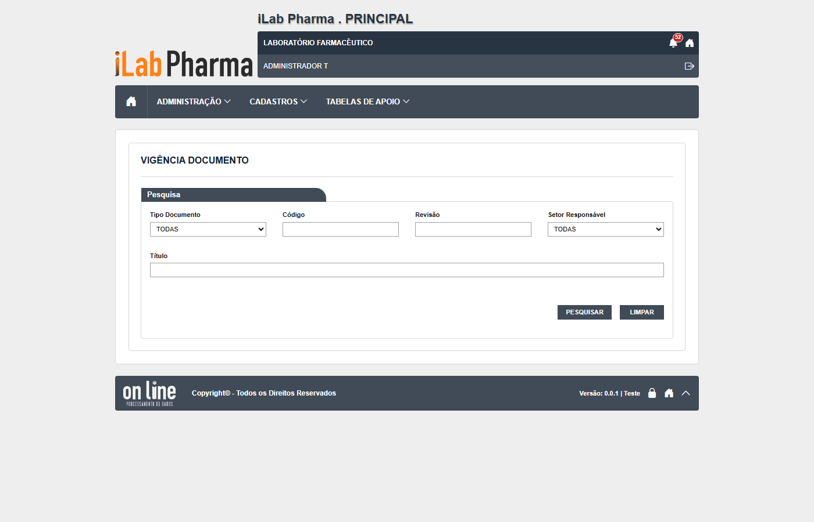
A imagem mostra a tela recém-aberta, com os cinco filtros.
- Pesquisar. Clique em PESQUISAR. A lista traz TIPO, CÓDIGO, REVISÃO, TÍTULO e SETOR RESPONSÁVEL, agora com o código gravado na aprovação, e o lápis de editar.
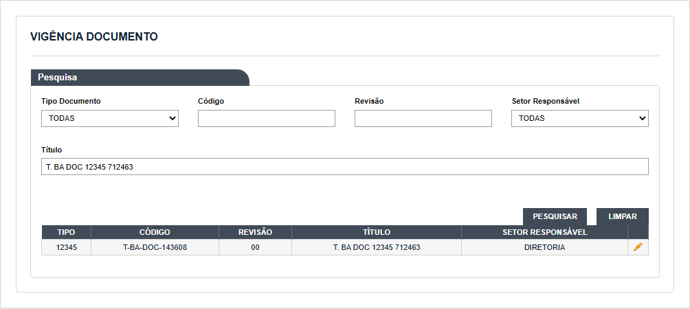
A imagem mostra o documento 12345 com o código digitado na aprovação, revisão 00, setor DIRETORIA.
- Abrir o documento. Clique no lápis. A edição mostra o cadastro (código e situação APROVADO bloqueados), Data de Emissão* e Data de Validade*, os quadros do documento, os anexos, o Documento Anexo Final, o quadro Treinamentos (com o total de funcionários aprovados), o Histórico e a Justificativa.
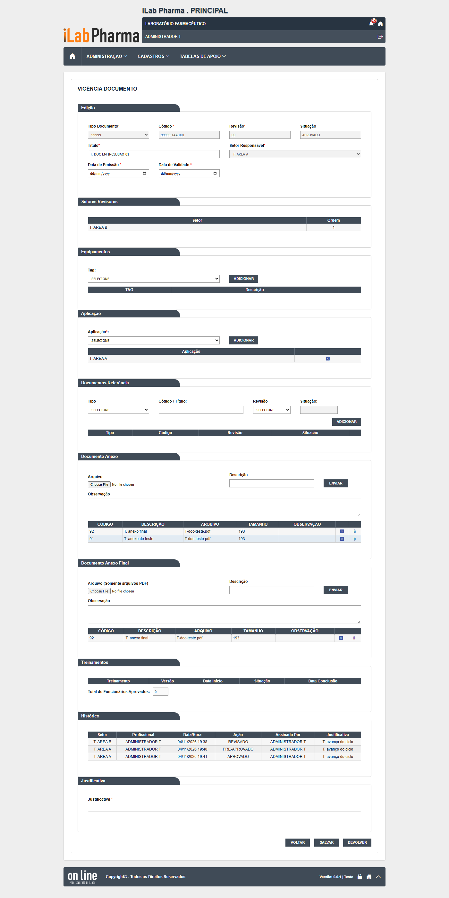
A imagem mostra um documento 99999 em APROVADO, com código 99999-TAA-001 e as datas em branco, e o quadro Treinamentos. Os botões do pé são só VOLTAR, SALVAR e DEVOLVER: não há "ASSINAR E TORNAR VIGENTE".
- Datas. Digite a Data de Emissão e a Data de Validade (campos de data). A validade deve ser maior que a emissão e a emissão não pode ser futura.
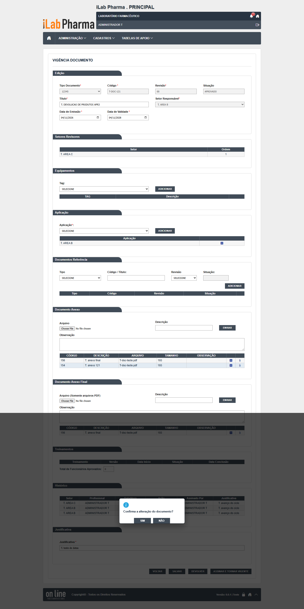
A imagem mostra a edição da Vigência com emissão em 04/11/2026 e validade em 04/11/2028, com o código T-DOC-121 bloqueado e a situação APROVADO.
- Tipo sem treinamento (exemplo: tipo 12345). Com as datas e a justificativa preenchidas, aparece ASSINAR E TORNAR VIGENTE.
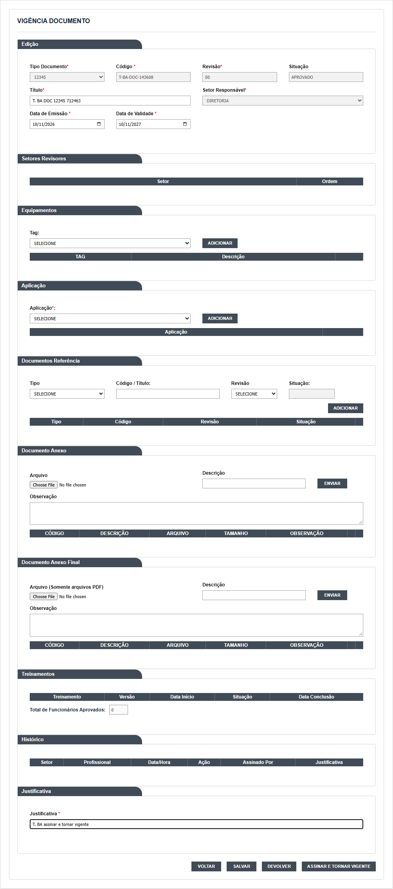
A imagem mostra o documento 180 em APROVADO, com código, emissão 10/11/2026 e validade 10/11/2027, quadro Treinamentos vazio e justificativa preenchida.
Clique no botão e confirme "Confirma a alteração do documento?":
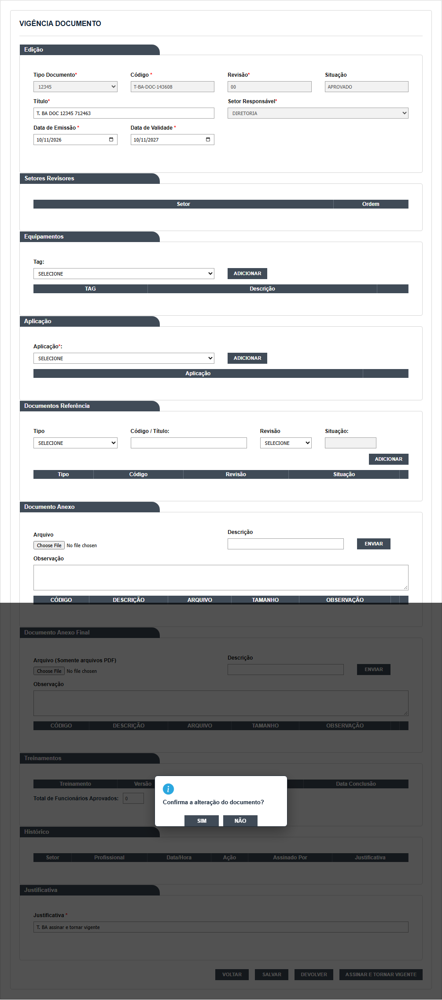
A imagem mostra a caixa "Confirma a alteração do documento?" com SIM e NÃO.
- Autenticar. Na janela Autenticação, digite o seu usuário e a sua senha.
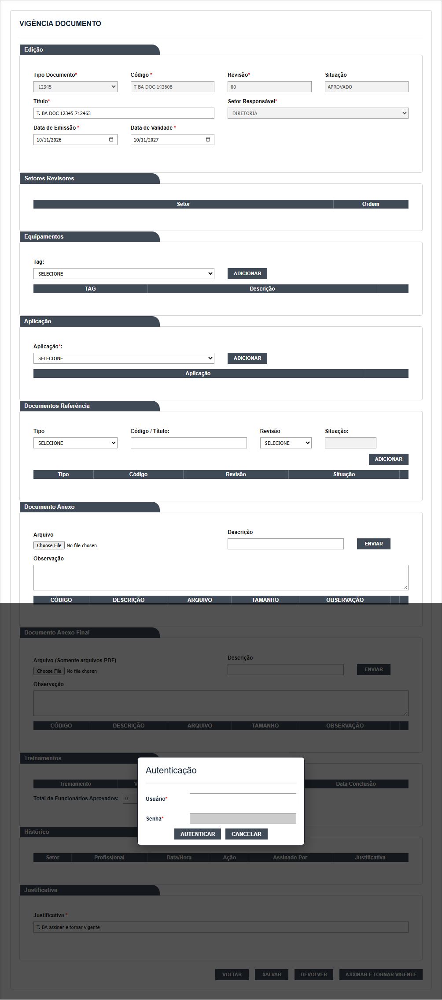
A imagem mostra a janela Autenticação com Usuário e Senha vazios.
- Sucesso. O sistema mostra "Alteração efetuada com sucesso."; o documento fica VIGENTE. O histórico não grava a vigência (DV-DOC-N-002).
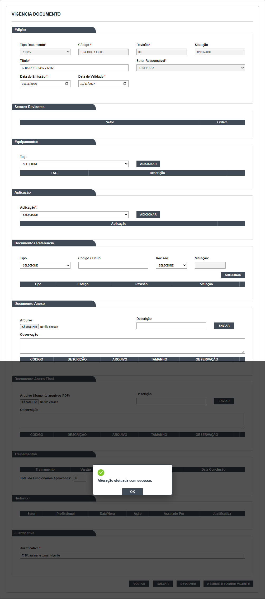
A imagem mostra a caixa "Alteração efetuada com sucesso."
- Tipo com treinamento (exemplo: tipo 99999). Depois de aprovado, o documento fica sem o botão. Em Garantia da Qualidade, crie o Cadastro de Treinamento ligado ao documento (o campo Documento aceita documento APROVADO), a Programação, a Matriz e a Conclusão até FINALIZADO. Mesmo assim, a tela de Vigência não mostra o treinamento nem oferece "Adicionar treinamento": o botão continua ausente.
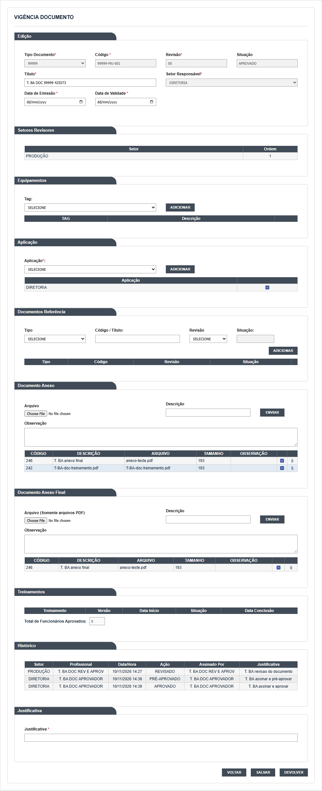
A imagem mostra o documento 178 em APROVADO, com código 99999-MU-001, o quadro Treinamentos vazio e os botões VOLTAR, SALVAR e DEVOLVER, sem o de tornar vigente.
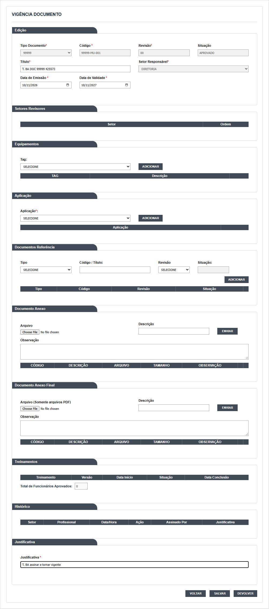
A imagem mostra o mesmo documento depois de o treinamento ser finalizado na GQ: o quadro Treinamentos continua vazio e o botão continua ausente (DV-DOC-N-009).
Só depois de o treinamento ser ligado ao documento pela API (a mesma chamada que a tela do Documento Legado oferece) o quadro Treinamentos mostra o treinamento como CONCLUIDO e o botão aparece:
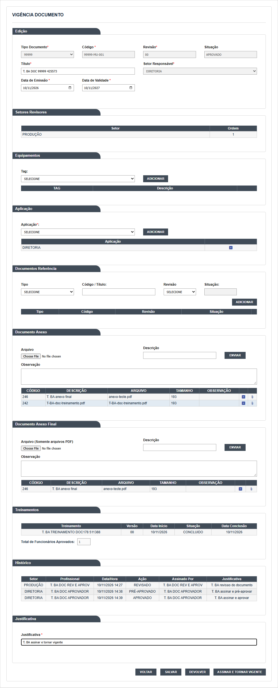
A imagem mostra o quadro Treinamentos com um treinamento concluído e os botões VOLTAR, SALVAR, DEVOLVER e ASSINAR E TORNAR VIGENTE.
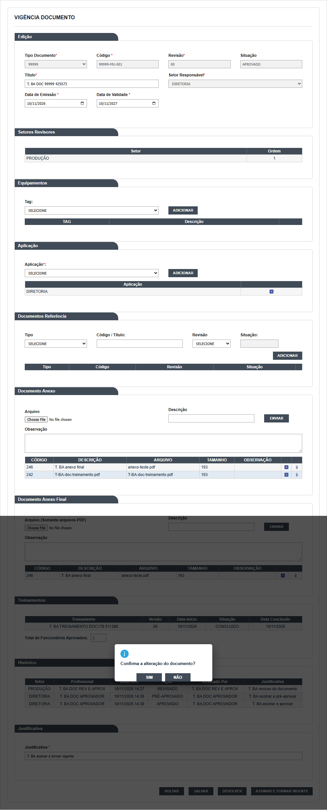
A imagem mostra a caixa "Confirma a alteração do documento?".
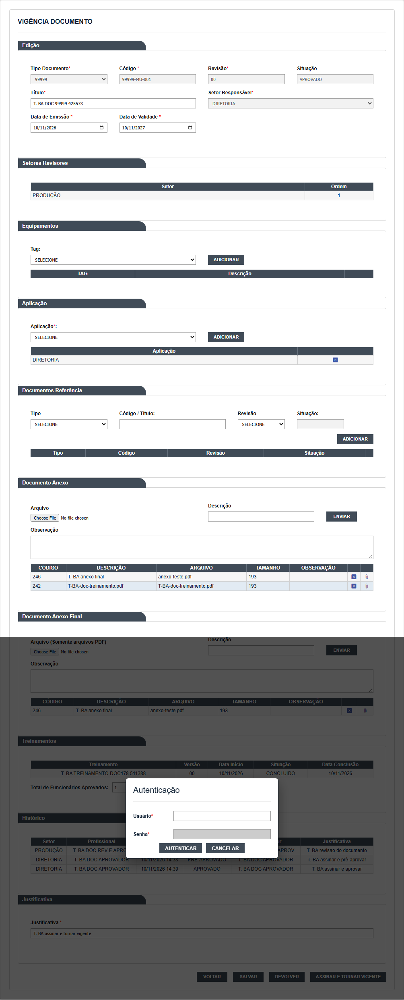
A imagem mostra a janela Autenticação.
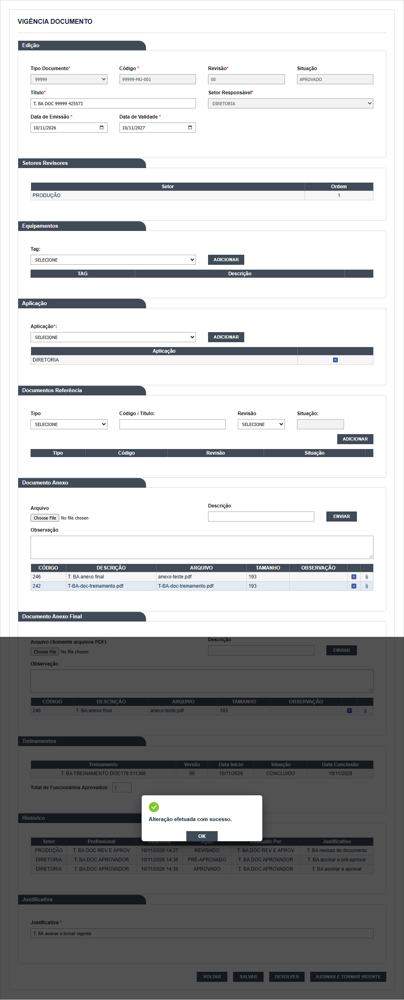
A imagem mostra a caixa "Alteração efetuada com sucesso." e o documento 178 passa a VIGENTE.
- Treinamento de outro documento. Se o treinamento ligado for o de outro documento, a lista de treinamentos o mostra como se fosse do documento, mas a vigência é barrada pelo servidor:
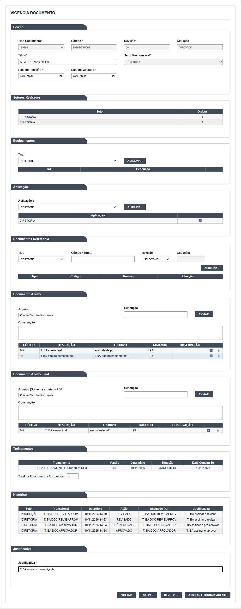
A imagem mostra o documento 179 com o quadro Treinamentos exibindo o treinamento do documento 178 como concluído (DV-DOC-N-010).
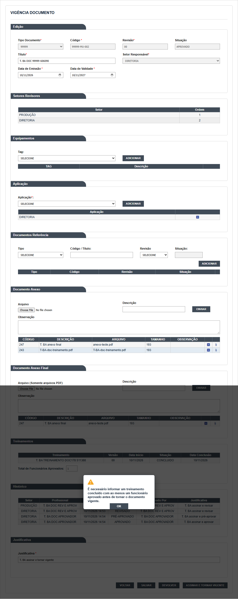
A imagem mostra a caixa "É necessário informar um treinamento concluído com ao menos um funcionário aprovado antes de tornar o documento vigente." sobre a edição. Com o treinamento do próprio documento 179, a vigência foi concluída:
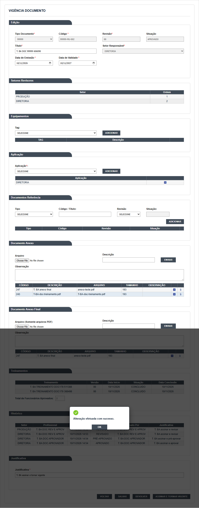
A imagem mostra a caixa "Alteração efetuada com sucesso." com o quadro Treinamentos mostrando os dois treinamentos (do 178 e do próprio 179).
- Devolver. DEVOLVER devolve ao passo anterior sem senha (do legado; a confirmar na versão nova; não testado).